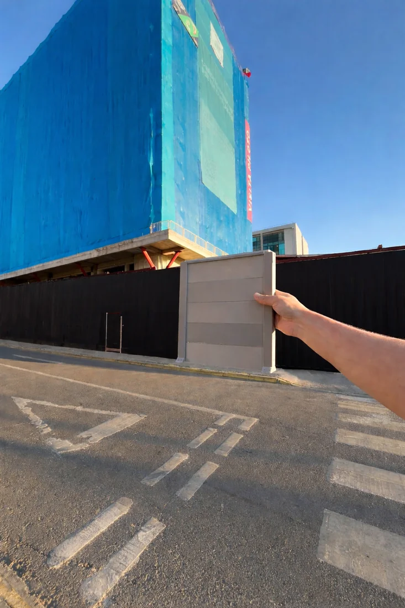
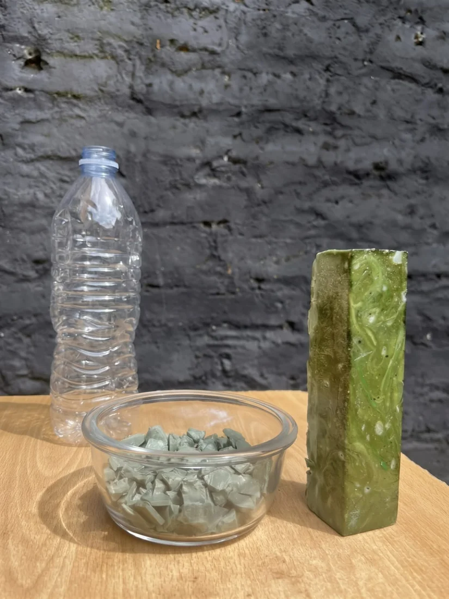
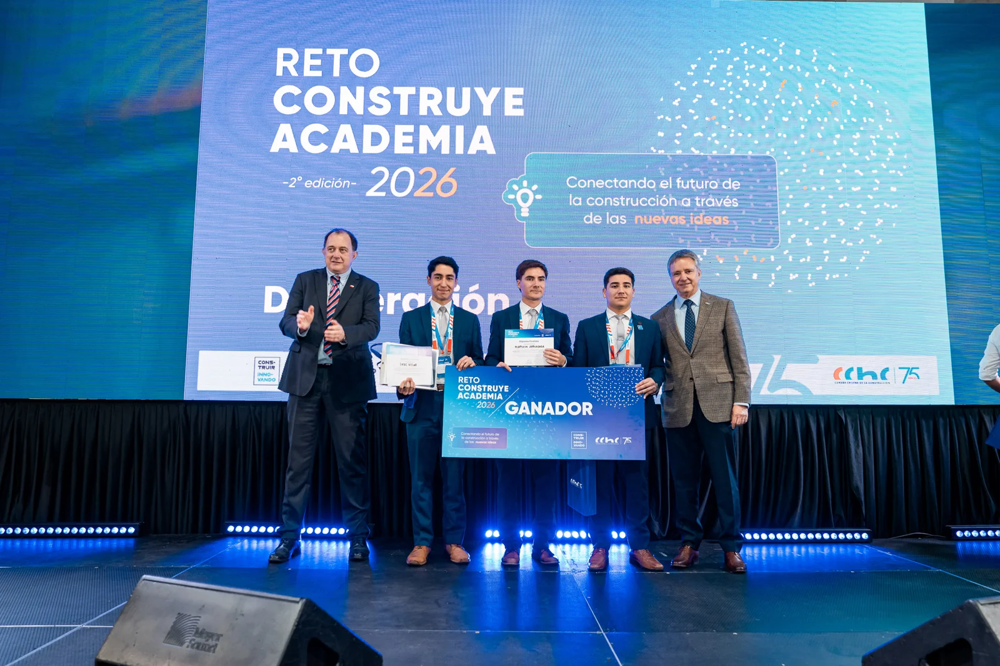

El plástico PET como recurso para nuevos componentes.
INNOVACIÓN · ECONOMÍA CIRCULAR
Ganadores Reto Construye Academia · 2026
El futuro de la construcción también se reutiliza.
Triplast desarrolla una propuesta de cierres perimetrales modulares a partir de PET reciclado, con foco en reutilización y diseño circular.

TRIPLAST CIERRE MODULAR
EL DESAFÍO
Dar valor a lo que antes se desechaba.
Los cierres temporales utilizados en construcción presentan una oportunidad para reducir el desperdicio y fomentar soluciones reutilizables.
LA SOLUCIÓNDiseñada para instalar.
Diseñada para instalar.
Pensada para volver a usar.

El concepto Triplast propone módulos de cierre perimetral a partir de material reciclado, orientados a una instalación práctica y ciclos de reutilización.
Una propuesta concebida para combinar paneles.
Diseño enfocado en desmontaje y uso posterior.
Propuesta enfocada en cierres temporales.
DESARROLLO
Aprendizajes con actores del sector.
Exploración del proyecto a través de encuentros, conversaciones y retroalimentación.
La mención de organizaciones no equivale a certificación técnica ni respaldo comercial.
03 / IMPACTO
Registro de impacto esperado
Indicadores referenciales del proyecto Triplast y simulador para estimar el impacto ambiental esperado según el perímetro lineal de una obra.
195 kg
KPI-01
PET reciclado cada 2 metros lineales
7,800 botellas
KPI-02
Botellas de 600 ml reutilizadas cada 2 metros lineales
441.16 kg
KPI-03
CO2e ahorrado por metro lineal
CALCULADORA DE PROYECTO
Simula el impacto de tu obra
Ingresa el perímetro lineal de tu proyecto para estimar el impacto ambiental del uso de Triplast frente a soluciones tradicionales.
m
50 m2000 m
EST-01
PLÁSTICO PET RECICLADO
4.875,00 kg
EST-02
BOTELLAS DE 600 ML REUTILIZADAS
195.000 botellas
EST-03
CO2e AHORRADO
22.058,00 kg
Los resultados se actualizan automáticamente al mover el perímetro lineal. Valores referenciales sujetos a validación técnica.
TRAYECTORIA
Del concepto al reconocimiento.
HITO DESTACADO · 2026
Primer lugar nacional en Construye Academia
El equipo Triplast obtuvo un reconocimiento en el Reto Construye Academia 2026, durante Edifica Santiago.
Ver cobertura de prensa ↗
Pitch final de Triplast en Edifica
Ver el pitch en YouTube ↗LAS PERSONAS
El equipo detrás de Triplast.
Tres integrantes, distintas especialidades y una visión compartida de innovación.
EN LOS MEDIOS
Noticias y novedades.
Publicaciones sobre el proyecto, sus hitos y reconocimientos.
Cargando publicaciones…
REGISTRO VISUAL
Galería del proyecto.
Prototipos, materiales, equipo y actividades del proyecto.
TAMBIÉN EN REDES
Ver @triplast_cl ↗
Sigue el proyecto en Instagram
Conoce nuevas publicaciones desde el perfil oficial del equipo.
CONTACTO
Construyamos una nueva forma de hacer las cosas.
Consultas sobre el proyecto, colaboración, investigación y desarrollo.
contactotriplast@gmail.com ↗Región del Maule · Chile